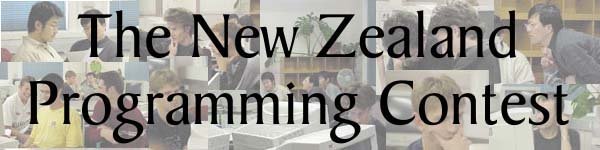
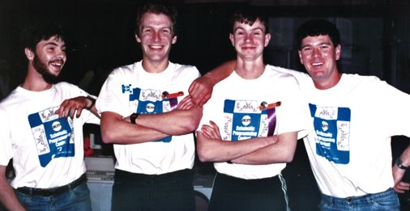
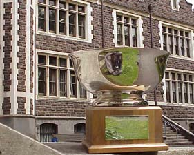
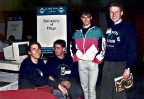
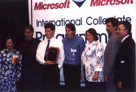

|
 |
|
Past TeamsNew Zealand! The team New Zealand! was a composite team made up from the top two New Zealand programming contest teams. TheAuckland team was from AIT and had come first in the New Zealand competition. The Otago University team had come second. An invitation to compete in the ACM finals was secured for a New Zealand team to enter. Since the ACM competition then had teams of four, the two top teams from New Zealand were entered as one team. This team, with the name New Zealand!, was placed a very credible 10th at the ACM finals.
 (Left-to-Right : Craig McNaughton, John Gee, Bruce Warrington and Paul Sharp) In 1989 New Zealand contest was changed to make it more like the ACM contest. This was done to enable NewZealand teams to gain practice competing under the ACM rules. To continue competing in the ACM programmingcontest New Zealand was assigned a region to compete in to gain a place in the finals. The region assignedto New Zealand was Southern California. Terminally Nocturnal competed in the New Zealand programming contest and came first. Winning the New Zealand programming contest meant they were to represent New Zealand at the regional competition in Southern California. After surprising the other teams by coming first in the region, Terminally Nocturnal was given a place in the finals. At the finals, Terminally Nocturnal came first, beating their nearest competing team by solving all problems in half of the time. In doing this Terminally Nocturnal became the first non-US team to win the competition (which resulted in standing ovation at the awards dinner ).  The Trophy won by Terminally Nocturnal Terminally Nocturnal won this splendid trophy for coming first in the 1990 ACM Colligate Programming Contest. It is currently housed in the main Computer Science building, Archway West, pictured in the background.
 ( From Left-to-Right : John Marshall, Dean McRobie, William Jones, and John Gee (Coach) In the 1992, the New Zealand programming contest changed. The change was the creation of two divisions. The first division was the open division which was for third year and above. The second division had the requirement the most highly trained team member could not have progressed beyond second year computer science. The 1992 team came first in division one. This was a good warm up for the South Pacific's. The South Pacific's are New Zealand's regional ACM competition. At the South Pacific's the team came first and were off the ACM finals. At the ACM finals the team faced stiff competition. A very credible 5th place was won by the 1992/1993 team at the ACM finals.
 ( From Left-to-Right : ?, Jason Butler, Tim Penhey, John Marshall, Raewyn Boerson, ?, William Poucher) Two thirds of the 1992 Dream Team (winners of New Zealand programming contests - 2nd division in 1992), reformed to compete in 1993. Shannon Murray left and John Marshall (from the 1992/1993 team) became the third member. Dream Team won the first division of the New Zealand programming contents and went on to win the South Pacific regional contest. In early 1994, Dream Team completed in the ACM finals. They narrowly missed out on winning the contest and came a close second to the team from the University of Waterloo.
|